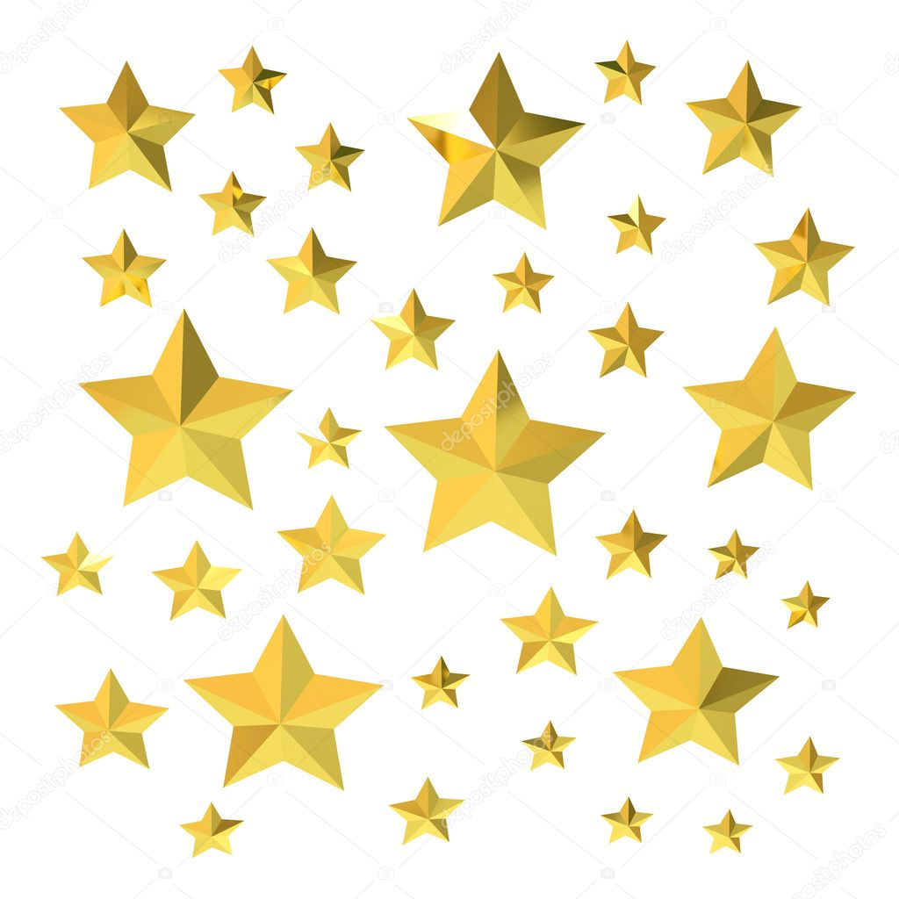

3. Da un estilo especial al primer hijo de un contenedor usando :first-child.
- escrito 1
- escrito 2
- eescrito 3
- escrito 4
4. Estiliza los campos de formulario no válidos usando :invalid.
5. Resalta solo los campos de tipo email con :type.
6. Diseña un formulario donde el campo activo (:focus) cambie de borde.
7. Estiliza únicamente los elementos únicos de su tipo con :only-of-type.
Primer párrafo
segundo parrafo
tercer párrafo
8. Aplica estilo solo al primer párrafo de una sección con :first-of-type.
parrafo primero
segundo parrafo
tercer párrafo
9. Usa :root para definir una variable de color y aplícala.
bienvenido esta es mi actividad de apropiacion
10.Diseña una navegación con sus etiquetas semanticas que cambie su color al pasar
sobre cada link.
11.Añade un icono antes de cada título con ::before.
Inicio
Servicios
Contacto
12. Añade una línea decorativa después de cada párrafo con ::after.
párrafo 1.
párrafo 2.
parrafo 3.
13. Crea un botón con un efecto de sombra usando ::after
14.Añade comillas antes y después de un bloque de cita.
cita del punto 14 añadir comillas
15. Diseña un input que tenga un ícono dentro usando ::before.
16. Coloca una imagen de forma relative y mueve su posición sin alterar el flujo.

17. Crea una tarjeta que contenga un botón de eliminar con absolute
tarjeta
18. Haz una barra de navegación fija en la parte superior (fixed).
19. Apila dos cajas usando z-index para controlar qué caja aparece arriba, cada caja debe tener un color de
fondo diferente.
Caja roja
Caja negra
20. Diseña una card que se centre usando position y transform.
card centrada
21. Define una variable global para color primario y aplícala a varios elementos
22. Crea un tema oscuro cambiando variables en :root
card con tema oscuro
23. Usa una variable con valor fallback si no existe otra definida.
fallback
24. Define variables dentro de un scope local (por ejemplo, dentro de .card).
locales
solo para esta tarjeta